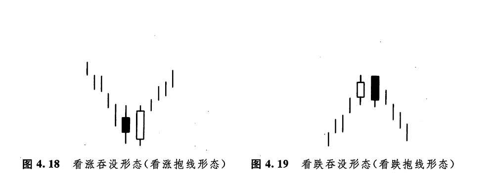
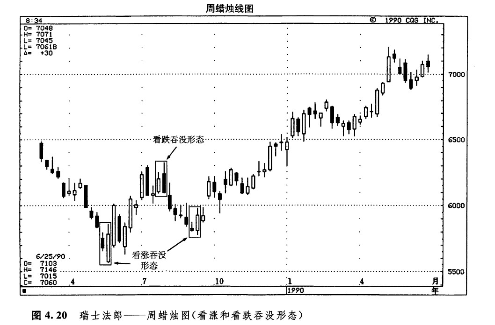
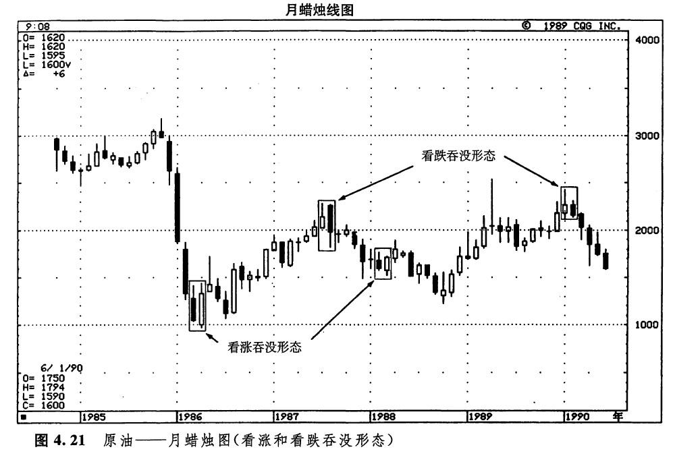
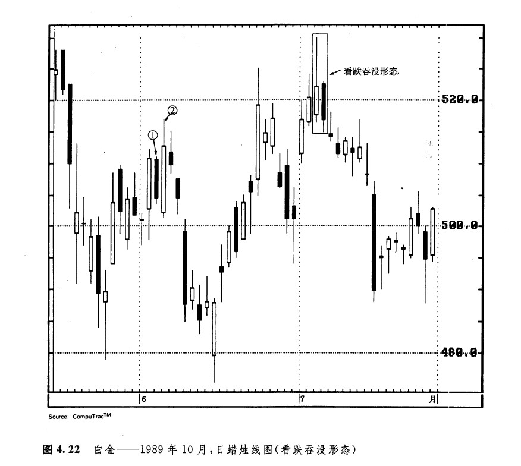
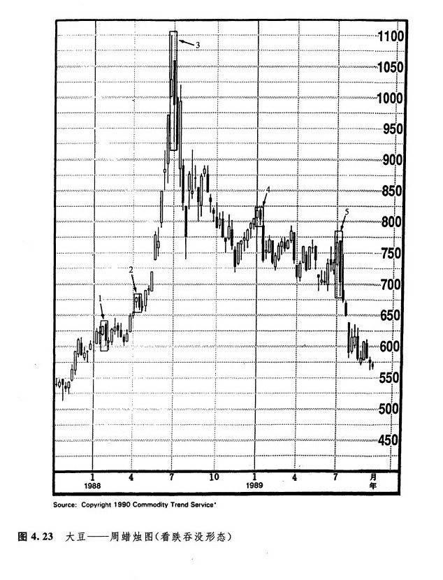

锤子线形态和上吊线形态是由单独的一根蜡烛线构成的。如前面所讨论，它们能够就市场的健康情况发出重要的技术信号。不过，在绝大多数情况下，蜡烛图技术信号都是由数根蜡烛线组合在一起形成的。吞没形态（或者说，抱线形态）是我们将介绍的第一类由数根蜡烛线组成的复合形态。吞没形态属于主要反转形态，是由两根颜色相反的蜡烛线实体所构成的。
图4.18显示的是看涨吞没形态（看涨抱线形态）。在本图中，市场本来处于下降趋势之中，但是后来出现了一根坚挺的白色实体，这根白色实体将它前面的那根黑色实体“抱进怀里了”，或者说把它吞没了。这种情形说明市场上买进的压力已经压倒了卖出压力。图4.19是看跌吞没形态（看跌抱线形态）的示意图。在本例中，市场原本正向着更高的价位趋升。但是，当前一个白色实体被后一个黑色实体吞没后，就构成了顶部反转的信号。这种情形说明，熊方已经从牛方手中夺走了统治权。

关于吞没形态，我们有三条判别标准：
1.在吞没形态之前，市场必须处在清晰可辨的上升趋势或下降趋势中，哪怕这个趋势只是短期的。
2.吞没形态必须由2条蜡烛线组成。其中第二根蜡烛线的实体必须覆盖第一根蜡烛线的实体（但是不一定需要吞没前者的上下影线）。
3.吞没形态的第二个实体必须与第一个实体的颜色相反。这一条标准有例外的情况，条件是，第一条蜡烛线的实体必须非常小，小得几乎构成了一根十字线（或者它就是一根十字线）。如此一来，如果在长期的下降趋势之后，一个小小的白色实体为一个巨大的白色实体所吞没，那么也可能构成了底部反转形态。反之，在上升趋势中，如果一个小小的黑色实体为一个巨大的黑色实体所吞没，那么也可能构成了顶部反转形态。
在西方的技术分析理论中，与日本蜡烛图吞没形态最近似的形态是反转日形态。西方反转日形态的具体情形是，在上升趋势（或不降趋势）的发展过程中，某一日市场曾经创出了新高（或新低），然而，当日的收市价却低于（或高于）前一日的收市价。您将发现，有的时候，蜡烛图的吞没形态发出的反转信号，按照西方的反转日概念是看不出来的。凭着抱线形态的这一优势，同那些采用传统的反转日概念作为反转信号的同行相比，您就占据了上风。关于这个问题，我们在图4.21、4.22和4.23中还有进一步的探讨。
下面列出了一些参考性要素，如果吞没形态具有这样的特征，那么它们构成重要反转信号的可能性将大大地增强：
1.在吞没形态中，第一天的实体非常小，而第二天的实体非常大。这种情况可能说明原有趋势的驱动力正在消退，而新趋势的潜在力量正在壮大。
2.吞没形态出现在超长期的或非常急剧的市场运动之后。如果存在超长期的上升趋势，则增加了以下这种可能性：潜在的买家已经入市买进，持有多头。在这种情况下，市场可能缺少足够的新的多头头寸的供应，无力继续推动市场上升。如果存在非常急剧的市场运动，则市场可能已经朝一个方向走得太远，容易遭受获利平仓头寸的打击。
3.在吞没形态中，第二个实体伴有超额的交易量。这种情形可能属于胀爆现象（如何在蜡烛图上进行交易量的配合分析，我们将在第十五章讨论）。
4.在吞没形态中，第二天的实体向前吞没的实体不止一个。
如图4.20所示，5月15日和5月22日所在的两个星期组成了一个看涨吞没形态。7月的最后2个星期形成了一个看跌吞没形态。9月份有一个看涨吞没形态。在图示主要上涨行情之前，有一小段抛售行情。它是这段抛售行情的底部。

图4.21是原袖的月蜡烛线图，从中既可以看到看涨吞没形态，也可以发现看跌吞没形态。从1985年末开始，市场走出了一场幅度达20美元的陡直下跌行情。1986年的第3个月和第4个月，先后形成了图示看涨吞没形态的两根蜡烛线。这一形态标志着之前的下降趋势的结束。从这个看涨吞没形态起，发生了一段上涨行情，但是1987年年中的看跌吞没形态给它划上了句号。1988年2月和3月形成的较小的看涨吞没形态，又将从1987年中的看跌吞没形态开始的下降趋势终结了。在这个看涨吞没形态之后，市场从下降趋势转为横向趋势，并持续了5个月之久。

1990年2月是一根黑色的蜡烛线，虽然它也将1月的白色蜡烛线的实体覆盖起来了，但是它超出1月实体的幅度还不到8个基本价格变化单位。从这一点来看，这不是一个理想的看跌吞没形态。然而，在进行蜡烛图技术分析的时候，必须包括一定程度的灵活性，这一点与其他图表分析手段相比并没有什么不同。考虑到本形态内在的种种疲软的迹向，将这个形态认定为看跌吞没形态是稳妥的，如果我们仅仅因为8个基本价格变化单位的差距不够大，而排除了它们构成看跌吞没形态的可能性，那么反倒是非常危险的。所有的图表分析技术都不例外，始终为分析者留有发挥主观判断的余地。
1987年和1990年的两个看跌吞没形态，充分体现了蜡烛图吞没形态的优越之处，它们发出的反转信号，如果用西方技术分析理论的反转目的标准来判断，是得不到的。根据西方顶部反转日概念的判别准则（在本例中，实际上是反转月的情形），其中第二条图线必须创出当前行情的新高。而在上述两个看跌吞没形态的实例中，第二根黑色蜡烛线并没有为当前行情创出新高。因此，按照美国的西方反转日的标准来衡量，它们就构不成反转形态。然而，按照蜡烛图技术的标准，这两个反转形态则是成立的。
图4.22是另一个很好的实例，从中我们也能体会到，相对于常规的线图分析工具来说，蜡烛图技术可能具有更大的优势。请注意7月7日和8日这两天的价格变化。这里的情况与上例类似，第二天与第一天比较，并没有创出新高，如果我们采用西方传统的反转日概念来衡量，那么这里丝毫没有发生顶部反转的迹向。然而，以蜡烛图技术来分析，这却是一个看跌反转信号，即此时市场确实形成了一个所谓的看跌吞没形态。

6月初有两根蜡烛线，蜡烛线1和2，看上去似乎是一个看涨吞没形态。但是，看涨吞没形态属于底部反转信号。这就是说，它们只有出现在下降趋势之后（或者在有的时候，出现在横向交易区间的下边界）才是成立的。在本图例中，虽然6月初出现了这个形似的看涨吞没形态，但是由于它并不处在下降趋势之中，因此，并不具有通常的预测意义。
在图4.23中，发生了一系列看跌吞没形态。吞没形态1将市场从之前的上升趋势，拖入一段持续了数月的水平交易区间。吞没形态2仅仅为当时的上涨行情带来了短暂的喘息机会。看跌吞没形态3、4、5所发出的反转信号，统统是西方技术分析工具提供不来的（这是因为在这三个反转形态中，它们的第二周均没有创下当前行情的新高，所以三者均不符合反转周的标准）。

下一篇：乌云盖顶形态（乌云线形态）
上一篇：锤子线和上吊线
copyright @ 2018 制作：汉钛电线，Hingtak Wire & Cable LLC